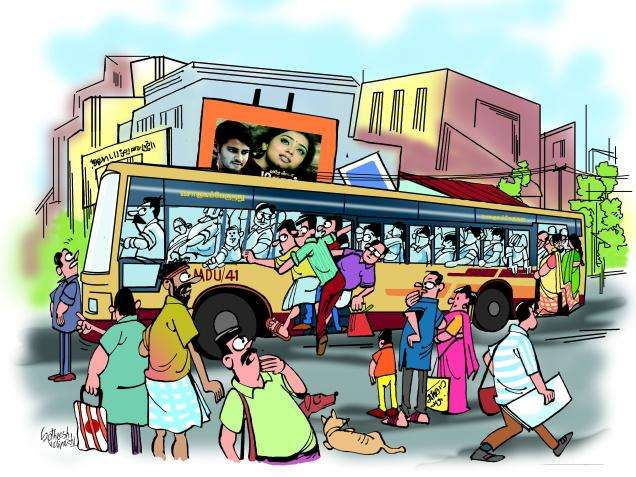

Over-crowded Bus
Traveling by bus in an enjoyable experience and I prefer traveling by my car. But not traveling by an over crowded bus. It is only an ordeal to enter an overcrowded bus but to buy your ticket, maintain vertical posture and alight at your destination without injury to your limber property is also a feat. Once I was standing at the head of the queue and did not enter as the bus was overcrowded when a friend came tearing from the rear. She almost forced me to board the bus telling me not to worry as somebody would give seat to us ladies. Inside the bus, it was like the plight of the sardine which try to get out of the tin from its bottom. I had to move from the entrance to the exit, but my ticket and that too in a bus which was not just packed to the full but was not even meant for carrying standing passengers. In the process, many boots stepped on my shoes and I too trod on many boots. Twice I found myself in very uncomfortable position. Once because a co-possanger tried to relieve his sufferings by smoking. Unable to bear the smoke I moved away fast. Believe me it was not easy. From the frying pan to the fire was never truer than in this case. I found myself next to a stinking man. I moved again. Fortunately my friend’s prediction came true. A young man-knight without armour-offered me his seat near the exit. My misery came to an end. I resolved never again to travel by overcrowded bus if I could.